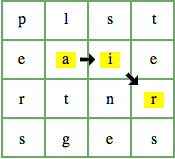
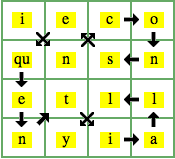
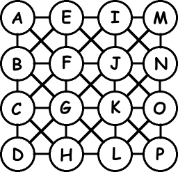

01.31.07
Posted in programming at 12:15 am by danvk
My experiment with code golf the other day forced me to think about ways to load a dictionary into a hash using only one line of code. I couldn’t think of a way then, but today I came up with this:
h = Hash[*(IO.readlines(Dict).map{|w|[w.chomp,1]}.flatten)]
Slow as hell, but it works! With little searching, I found another method, which is much better:
h = IO.readlines(Dict).inject({}) {|h,w| h[w.chop!]=1; h }
The “;” in there pushes the meaning of “one line”, but change “1; h” to “1 and h” and it’s less ambiguous. That got me thinking about all the different ways to load a dictionary into a hash. Which one is the fastest? Here’s all the ones I could think of, sorted from fastest to slowest. They were tested with Dict="/usr/share/dict/words":
| Time |
Command |
| 0.443s |
h = {}; open(Dict).read.split.each { |w| h[w]=1 } |
| 0.448s |
h = {}; IO.read(Dict).split.each { |w| h[w]=1 } |
| 0.555s |
h = {}; IO.readlines(Dict).map { |w| h[w.chop!] = 1 } |
| 0.568s |
h = {}; IO.readlines(Dict).map { |w| h[w.chomp!] = 1 } |
| 0.882s |
h = {}; IO.readlines(Dict).map { |w| h[w.chop] = 1 } |
| 0.897s |
h = {}; IO.readlines(Dict).map { |w| h[w.chomp] = 1 } |
| 0.958s |
h = {}; IO.foreach(Dict) { |w| h[w.chop!] = 1 } |
| 1.064s |
h = open(Dict).read.split.inject({}) {|h,w| h[w.chop!]=1; h } |
| 1.065s |
h = IO.read(Dict).split.inject({}) {|h,w| h[w.chop!]=1; h } |
| 1.306s |
h = {}; IO.foreach(Dict) { |w| h[w.chomp] = 1 } |
| 1.475s |
h = {}; open(Dict).read.scan(/\w+/) { |w| h[w]=1 } |
| 1.479s |
h = {}; IO.read(Dict).scan(/\w+/) { |w| h[w]=1 } |
| 1.172s |
h = IO.readlines(Dict).inject({}) {|h,w| h[w.chomp]=1; h } |
| 26.022s |
h = Hash[*(IO.readlines(Dict).map{|w|[w.chomp,1]}.flatten)] |
There are some clear trends here. First and foremost, it pays to eschew line-oriented processing. The read method slurps in the whole string and then split segments it into words. I suspect that split with no parameter (=split on whitespace) is so common that it’s special-cased in the Ruby interpreter. A little digging into the Ruby C source confirms that guess. The relevant stuff is the awk_split stuff starting at line 3514. Just for the record, the Ruby C source is some of the cleanest I’ve ever seen.
Another clear trend: using the self-modifying chomp! and chop! is much faster than chomp and chop. This makes a lot of sense, since Ruby doesn’t need to create bunches of new strings.
So in conclusion, the fastest technique is:
h = {}; open(Dict).read.split.each { |w| h[w]=1 }
and the fastest one-liner is:
h = open(Dict).read.split.inject({}) {|h,w| h[w.chop!]=1; h }
I suspect that a solution using scan could win if Ruby had a special case for whitespace in that routine like it does in split.
Permalink
01.30.07
Posted in boggle, programming at 11:02 pm by danvk
Last time, we wrote a program that found all the words on a Boggle board in just over four minutes per board. But what was it spending all that time doing? Let’s add some debugging output to find out:
def solve(x, y, sofar)
puts "#{x},#{y}: ‘#{sofar}’"
…
Here’s what happens:
$ ruby fast.rb a b c d e f g h i j k l m n o p
0,0: ''
0,1: 'a'
0,2: 'ab'
0,3: 'abc'
1,2: 'abcd'
1,1: 'abcdg'
1,0: 'abcdgf'
2,0: 'abcdgfe'
2,1: 'abcdgfei'
2,2: 'abcdgfeij'
1,3: 'abcdgfeijk'
2,3: 'abcdgfeijkh'
3,2: 'abcdgfeijkhl'
3,1: 'abcdgfeijkhlo'
3,0: 'abcdgfeijkhlon'
3,3: 'abcdgfeijkhlo'
3,3: 'abcdgfeijkhl'
3,2: 'abcdgfeijkhlp'
3,1: 'abcdgfeijkhlpo'
3,0: 'abcdgfeijkhlpon'
...
Quick: how many words start with “abcd”? I can’t think of any either. But our program dutifully searches over the entire board for words we know it won’t find. It’s painful to think about all the time our search is wasting exploring paths that can’t possibly start real words. We need to cut off paths like “abcd” at the head. We can do this by creating a list of word stems: sequences of letters that can start legal Boggle words. “a” is on that list. So is “ab”. “abc” probably isn’t, though, and “abcd” certainly isn’t.
We may as well store the list of stems in another hash table. Here’s how:
Words = Hash.new
Stems = Hash.new
IO.foreach("words") do |line|
line =~ /^([a-z]{3,17})\b/ or next
wd = $1
Words[wd] = true
(1..wd.length-1).each do |len|
Stems[wd[0,len]] = true
end
end
Now we modify the solve routine to only make a recursive call when it could result in new words. This is a trivial change:
solve(x+dx,y+dy,wd) if Stems[wd] # keep going if it'll help!
Now the moment of truth. How much of a win did these four new lines of code buy us?
$ time ruby fast.rb a b c d e f g h i j k l m n o p
18
real 0m7.831s
user 0m7.651s
sys 0m0.096s
$ time ruby fast.rb c a t d l i n e m a r o p e t s
2338
real 0m7.990s
user 0m7.818s
sys 0m0.094s
WOW! That’s a factor of 30 improvement! If we dig a little deeper, it gets even more interesting:
$ ruby -r profile fast.rb c a t d l i n e m a r o p e t s
2338
% cumulative self self total
time seconds seconds calls ms/call ms/call name
40.19 213.80 213.80 172235 1.24 2.62 Range#each
11.24 273.58 59.78 1 59780.00 401400.00 IO#foreach
11.05 332.36 58.78 1554484 0.04 0.04 Hash#[]=
10.96 390.64 58.28 8892 6.55 84.27 Array#each
10.43 446.13 55.49 1381345 0.04 0.04 String#[]
4.25 468.76 22.63 130010 0.17 0.30 Range#===
2.99 484.64 15.88 247385 0.06 0.06 Fixnum#<=>
2.41 497.44 12.80 244423 0.05 0.05 Fixnum#+
1.40 504.87 7.43 132259 0.06 0.06 Array#[]
1.37 512.18 7.31 8891 0.82 85.58 Object#solve
The first three methods are called only in dictionary-loading code we just wrote. The vast majority of time is being spent loading the dictionary! There’s not much we can do to improve this, but we can make it less important by changing the problem we’re trying to solve.
Right now we’re just trying to score one board. But if we knew in advance that we were going to score 10 boards, we could load the dictionary once and then score all ten boards using that dictionary. This would mitigate the slow dictionary load. Here’s one way to do it. Input is now taken from STDIN:
# Take whitespace-separated inputs on each line
ARGF.each do |line|
Found.clear
letters = line.chomp.split(' ')
(0..15).each { |i| Bd[i/4][i%4] = letters[i] }
(0..15).each { |i| solve(i/4, i%4, "") }
puts Found.keys.inject(0) { |sum,w| sum + Scores[w.length] }
end
There are a few Rubyisms we haven’t seen yet in those lines. ARGF is a great crutch for Perl programmers who miss typing while(<>) {...}. It opens each input file left in ARGV and yields each line. If there’s no input files left, it reads STDIN and yields each line it gets there. Many, many programs do their work in an ARGF loop.
The chomp method in line.chomp removes a trailing newline from line, if it’s there. The split(' ') is a special case of the split method that splits the line on whitespace into an array. These are also Perlisms. Come to think of it, most of the strange, idiosyncratic features of Ruby are ultimately inspired by Perl.
I generated a file with ten random boards in it:
c a t d l i n e m a r o p e t s
a b c d e f g h i j k l m n o p
s i e e u e o o c t r k x o n n
c n s r e e h m i o r t o i k y
t v b i t n p u e e o t n t r e
y f h a s e g i o n m o d t a e
e e n o l a o s t i a s v m e l
s t n t e e n t a e e o c p o b
a s y r p h u v i e r e e u p o
s qu n g t f y a t b e w r e t e
And now the performance:
$ time ruby multi.rb boards
2338
18
138
121
190
212
272
211
138
87
real 0m8.454s
user 0m8.264s
sys 0m0.098s
It took 7.75 seconds to process one board earlier in this post, so that means that the solver itself is running at a rate of (8.264-7.75)/9 = 0.057 secs/board. This is fast enough that we need to start inverting our units. We’re getting 17.5 boards/sec, and we’ve improved by a factor of nearly 5000 since our initial attempt!
Permalink
Posted in boggle, programming at 1:40 am by danvk
Last time, we talked about how to play Boggle and the general idea of a program to find all the words on a board. This time, we’ll implement it! We’ll use Ruby, since it’s such a wonderful language.
First of all, we’ll need a dictionary of valid English words. There are plenty of different dictionaries floating around the web, and if you’re running a UNIX-style OS, you’ve already got one in /usr/share/dict/words. That dictionary is pretty bad, though. It’s designed for spellcheckers, and has no shortage of extremely questionable words (e.g. “aal” — more on this in a future post). I’ve eventually settled on the ENABLE2K list, since it seems to agree well with the scrabble dictionary and my intuition for words.
A dictionary on disk is no good, though. We need to load it into memory. Hash tables are the best built-in data structure for us, since they provide fast word lookups. Here’s the code:
Words = Hash.new
IO.foreach("words") do |line|
line =~ /^([a-z]{3,17})\b/ and Words[$1] = true
end
There’s some slightly subtle stuff going on here. IO.foreach passes each line in a file to its block. In a display of its Perl roots, Ruby includes the trailing newline on each line. That’s what the “\b” in the regular expression is matching. In Perl, we could have written /^([a-z]{3,17})$/, since Perl interprets “$” as end-of-line. But Ruby interprets it as end-of-string, so we have to fudge. The capturing parens cut off the newline and put the word in $1, which we add to the hash.
Just a little more setting up. We’ll represent the board as a 4×4 array of strings, one for each letter on the board. Letters will come in from the command line arguments (ARGV). We also need a way to remember which words we’ve found and which cells we’ve gone through in the depth-first search.
Found = {} # = Hash.new
Prev = Array.new(4) { [false] * 4 }
Bd = Array.new(4) { [0] * 4 }
(0..15).each { |i| Bd[i/4][i%4] = ARGV[i] }
When you use multiplication on arrays in Ruby it acts like Perl’s x operator, so [0] * 4 == [0,0,0,0].
Now for the meat of the algorithm, the recursive DFS routine. When we enter a cell, we mark it as visited so that longer paths won’t illegally pass through the cell again. Then we check if we’ve formed an English word. Finally, we continue the search on paths in every direction around the cell.
Dirs = [ [-1,-1], [-1,0], [-1,1], [0,-1], [0,1], [1,-1], [1,0], [1,1] ]
def solve(x, y, sofar)
Prev[x][y]=true # Mark our turf
wd = sofar + Bd[x][y]
Found[wd]=true if Words[wd] # count the new word
Dirs.each do |dx, dy|
next unless (0..3)===(x+dx) # are we still
next unless (0..3)===(y+dy) # on the board?
next if Prev[x+dx][y+dy] # have we been here before?
solve(x+dx,y+dy,wd) # keep going!
end
Prev[x][y] = false # We're done here
end
When Ruby sees a single array like [1,0] passed into a block with two parameters, it automatically expands the array to match the params, which is almost always exactly what you want. The recursion bottoms out when we got trapped in a cell: Prev[x+dx][y+dy] is set on each iteration of the loop that lands on the board.
That funky === operator is the range inclusion operator. The statement (a..b)===x is entirely equivalent to a<=x && x<=b.
Finally we need to start the search from each cell and tally up the score:
(0..15).each { |i| solve(i/4, i%4, "") }
# Length: 0, 1, 2, 3, 4, 5, 6, 7, 8, 9,10,11,12,13,14,15,16,17
Scores = [0, 0, 0, 1, 1, 2, 3, 5,11,11,11,11,11,11,11,11,11,11]
puts Found.keys.inject(0) { |sum,w| sum + Scores[w.length] }
The Enumerable.inject method is like foldr in functional languages or accumulate in the C++ STL. It takes a starting value (0 in this case) and an action on that value for each item in the enumeration.
And that, my friends, is a complete Boggle solver! How fast is this? Here's a few sample runs on my MacBook Pro:
$ time ruby short.rb a b c d e f g h i j k l m n o p
18
real 4m11.836s
user 4m8.601s
sys 0m0.777s
$ time ruby short.rb c a t d l i n e m a r o p e t s
2338
real 4m12.465s
user 4m8.631s
sys 0m0.866s
It's a strength of this algorithm that its running time is almost completely independent of the input board. But four minutes is an eternity in computer time. How much better can we do?
Here's the full source of the program:
# Load all 3-17 letter words into a hash for fast lookup
Words = Hash.new
IO.foreach("words") do |line|
line =~ /^([a-z]{3,17})\b/ and Words[$1] = true
end
Found = Hash.new # hash of words we've found
Prev = Array.new(4) { [false] * 4 } # where have we been already?
Bd = Array.new(4) { [0] * 4 } # empty 4x4 array
(0..15).each { |i| Bd[i/4][i%4] = ARGV[i] }
# All the different directions [dx,dy] we can look from a cell
Dirs = [ [-1,-1], [-1,0], [-1,1], [0,-1], [0,1], [1,-1], [1,0], [1,1] ]
def solve(x, y, sofar)
Prev[x][y]=true # Mark our turf
wd = sofar + Bd[x][y]
Found[wd]=true if Words[wd] # count the new word
Dirs.each do |dx,dy|
next unless (0..3)===(x+dx) # are we still
next unless (0..3)===(y+dy) # on the board?
next if Prev[x+dx][y+dy] # have we been here before?
solve(x+dx,y+dy,wd) # keep going!
end
Prev[x][y] = false # We're done here
end
# Start a depth-first search from each cell on the board
(0..15).each { |i| solve(i/4, i%4, "") }
# 0, 1, 2, 3, 4, 5, 6, 7, 8, 9,10,11,12,13,14,15,16,17
Scores = [0, 0, 0, 1, 1, 2, 3, 5,11,11,11,11,11,11,11,11,11,11]
puts Found.keys.inject(0) { |sum,w| sum + Scores[w.length] }
In the spirit of code golf, I tried to make this program as short as I possibly could. Here's the result: a 12 line, slow-as-hell Boggle solver that I won't dignify with an explanation. Someone claimed he could write a shorter one in Haskell. I'll believe it when I see it!
W, F = {}, {}
IO.foreach("words") { |l| l =~ /^([a-z]{3,17})\b/ and W[$1] = 1 }
B = Array.new(6) { [""]*6 }
(0..15).each { |i| B[1+i/4][1+i%4] = ARGV[i] }
def s(x, y, w)
p, B[x][y] = B[x][y], ""
F[w+p]=true if W[w+p]
(0..8).map{|i|[i/3-1,i%3-1]}.each {|e,f| s(x+e,y+f,w+p) if B[x+e][y+f]!=""}
B[x][y] = p
end
(0..15).each { |i| s(1+i/4, 1+i%4, "") }
puts F.keys.inject(0){|s,w| s+(w.size<8 ? [0,0,0,1,1,2,3,5][w.size] : 11)}
Permalink
01.28.07
Posted in boggle, programming at 11:17 pm by danvk
After showing Evan my online boggle solver at work, I was inspired to start writing some blog posts on how that program works. So here goes!
Boggle is a game by Hasbro in which you try to find words on a 4×4 grid of letters. There are 16 dice with six letters apiece on them. You roll the dice into the 4×4 slots and connect them to form words. The longer the words you find, the more points you get.

You can use diagonals and you can cross your own path, but you can’t use the same die twice in forming a word:

As a CS-type, it wasn’t long before I started thinking about how to write a computer program to quickly find all the words on a Boggle board. The right way to think about the board is as a bidirectional graph:

To get all sequences of letters in a graph, we can just do a depth-first search. There will be a ton of these sequences, but most of them will be phrases like “aefbg” that aren’t real English words. So we’ll also need a dictionary to filter out the non-words. Then it’s just a matter of scoring:
| Length |
Score |
| 1-2 |
0 |
| 3-4 |
1 |
| 5 |
2 |
| 6 |
3 |
| 7 |
5 |
| 8-17 |
11 |
Seventeen letter words are possible! Just look at the ‘inconsequentially’ board above. The “qu” die is a minor nuisance that’ll keep coming up. It’s the only die that doesn’t have just one character on each face.
Next time we’ll code up a solution in Ruby and test its performance. After that, we’ll start looking at optimizations and how to find the highest-scoring Boggle board.
Permalink